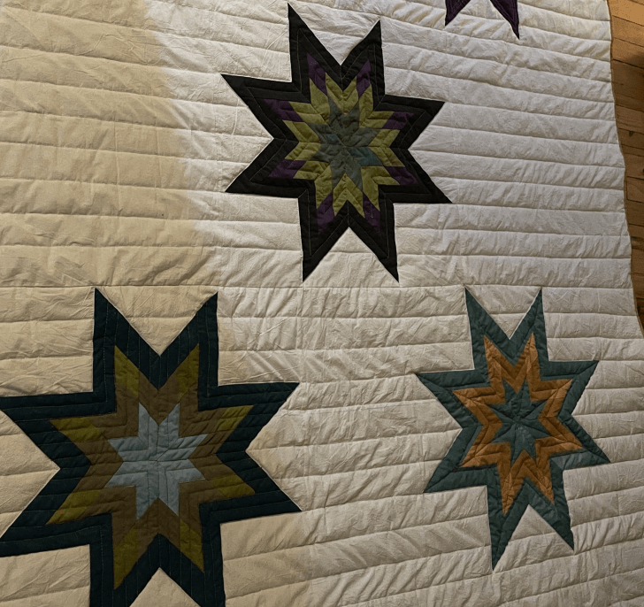

Why Hemp for Quilting?
Quilting is a deeply tactile craft where makers interact directly with materials through cutting, sewing, layering, and touch. This hands-on experience creates a unique opportunity to evaluate hemp textiles based on real performance rather than assumptions.

Durable and Long-Lasting
Hemp fibers are known for their strength and long-lasting quality.

Breathable and Lightweight
Hemp fabric is breathable and gets softer with every wash and use; there is a limit to how soft it can get.

Naturally Textured and Tactile
Its natural texture adds depth and character to quilts and textile work.

Biodegradable and Lower-Impact
Hemp requires less water and fewer pesticides than cotton.